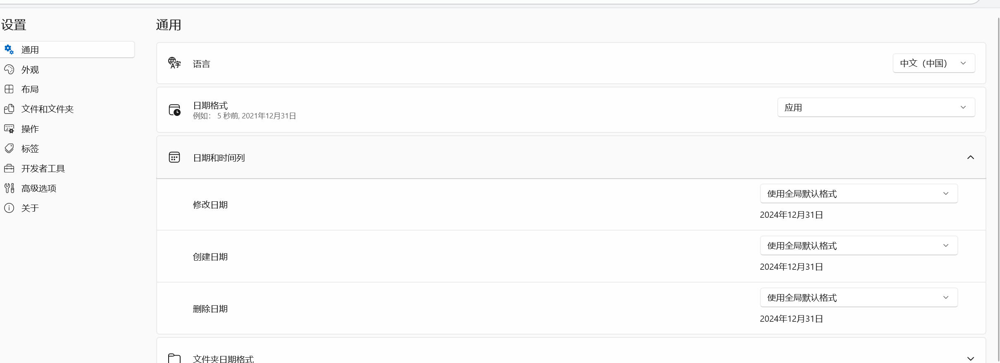
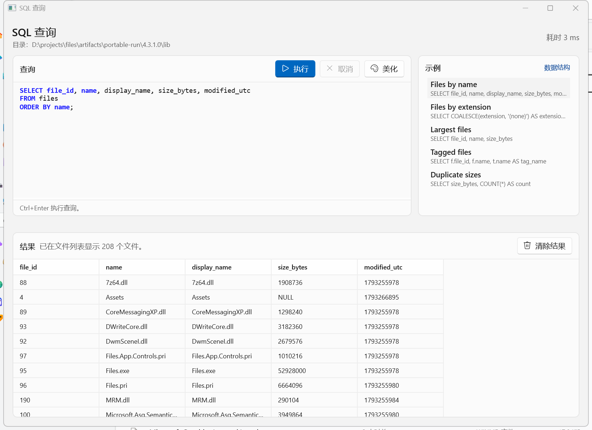
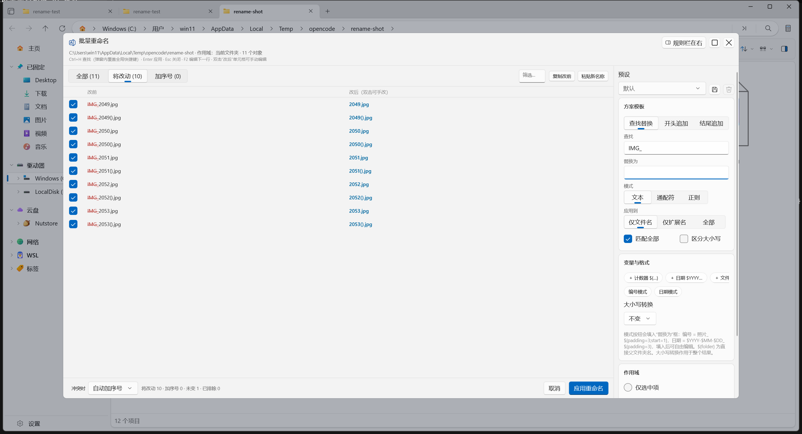
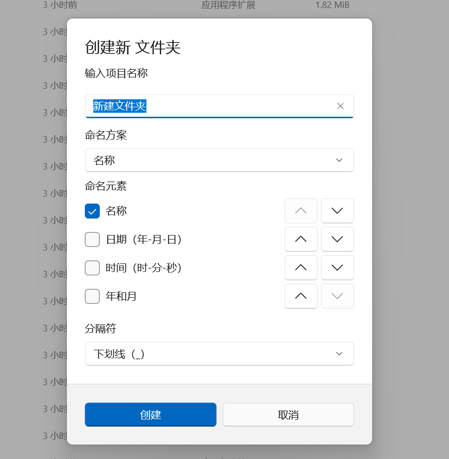

解压即用的便携版
完整目录 ZIP，自带 .NET 与 Windows App SDK，不需要管理员权限，也不写系统注册表。
设置、标签、布局、日志和缓存都在程序目录的 Data 里，整个文件夹可以随 U 盘移动。
01 · 概览
上游 Files 已经把「现代文件管理器」这件事做得不错。这个分支没有重做界面，而是把四类高频、上游又明显缺位的场景补齐， 并且尽量保持与上游一致的交互习惯，方便随时切回原版。
完整目录 ZIP，自带 .NET 与 Windows App SDK，不需要管理员权限，也不写系统注册表。
设置、标签、布局、日志和缓存都在程序目录的 Data 里，整个文件夹可以随 U 盘移动。
全局默认、全局列规则、目录规则、目录递归规则四级生效；精确到秒和毫秒，也能用 .NET 自定义格式串。
名称、类型、扩展名、标签、大小、修改与创建时间都能筛；支持多选、范围和安全正则。
筛选、分组、排序和布局可以写进地址栏，复制整串就能还原当时的视图。
私有内存快照上的只读 SQLite 查询、12 列可选的 CSV/Excel 导出，以及带预览、变量、冲突策略和整批撤销的重命名器。
02 · 差异速览
下表只列确有差异的领域，不做全功能清单。标有「新增」的格子表示本分支独有能力； 「保留」表示行为与上游一致，只是周边增加了新入口或新选项。
| 领域 | 上游原版 | 本分支 |
|---|---|---|
| 分发方式 | MSIX 与经典安装包 | 新增完整目录便携 ZIP，解压即可运行新增 |
| 数据位置 | 包数据或用户目录 | 便携版数据集中在程序目录 Data，可随目录复制、移动 |
| 运行依赖 | 依赖系统已安装的运行时 | 便携版自带 .NET 与 Windows App SDK，Native AOT，无需管理员权限 |
| 包身份与更新 | 官方包身份，走官方更新源 | 独立 Files.Internal 身份与内部证书；不访问官方更新源，手动升级 |
| 系统集成 | 安装后提供文件关联、协议、Shell/COM 等集成 | 便携版不注册任何集成；本分支 MSIX 默认不接管，显式开启后显示接管状态，可恢复原值 |
| 时间格式 | 全局日期格式预设 | 全局、按列、按目录、递归目录四级规则；自定义格式、秒、毫秒与实时预览 |
| 目录筛选 | 顶部名称包含过滤 | 列头筛选：名称、类型、扩展名、标签、大小、修改/创建时间；多选、范围、正则 |
| 地址栏 | 只表示路径 | 路径后可携带临时的筛选、分组、排序与布局参数，可直接复制分享 |
| SQL 查询 | 无 | 只读 SQLite 工作台；CTE、窗口函数、连接、聚合；文件与表格双结果视图 |
| 导出文件列表 | 无 | 工具栏一键导出：12 列可选、可递归、可仅导出当前筛选，CSV 或 Excel |
| 批量重命名 | 多选仅「统一名称 + 自动去重」 | 文本/通配符/正则、追加模板、变量、作用域深度、冲突策略、预设与整批撤销 |
| 新建文件夹 | 固定默认名称 | 可配置命名方案：名称、日期、时间、年月、顺序与分隔符 |
| 文件系统链接 | 符号链接与快捷方式混同，junction 当普通文件夹 | 四类链接的角标、真实类型文字与属性页「链接」页 |
| 本地化 | 上游语言包 | 补充简体中文与繁体中文的命名方案、批量重命名等界面文本 |
| 上游协作 | 原版项目 | 独立分支，不向上游提交 PR；同步上游采用可审查合并 |
功能详解
下面按功能分组，分别说明入口、能力、生效规则和明确不做的部分。凡是容易踩坑的行为都单独标出， 避免把「设计选择」误当成「已知缺陷」。
03 · 分发
同一份源码通过 Distribution 构建属性产出两种形态：沿用包身份的 MSIX 安装版，
以及完整目录的便携版。两者核心文件管理能力一致，差异集中在系统集成和更新方式。
Files.Internal，与本分支的便携版、上游原版互相隔离。Files.Internal_<version>_x64-portable.zip，解压整个目录后运行 Files.exe。便携版的设置、标签、布局、日志和缓存都位于程序目录的 Data：
Data 目录默认只允许一个实例；锁文件为 Data/.instance.lock。04 · 时间格式
上游只有一个全局日期格式。这里把它拆成「全局默认 / 全局列规则 / 目录规则 / 目录递归规则」四层， 适合归档目录用日期、素材目录用带毫秒的时间，而系统目录保持默认。
HH、mm、ss、fff 和 12 小时制。| 优先级 | 规则 | 典型用法 |
|---|---|---|
| 1 | 当前目录对特定列的规则 | 把 D:\素材 的修改时间固定为 yyyy-MM-dd HH:mm:ss.fff |
| 2 | 当前目录的默认时间格式 | 让整个拍摄目录统一显示日期，不区分列 |
| 3 | 全局对特定列的规则 | 所有目录的「创建时间」都带秒，其他列保持默认 |
| 4 | 全局默认时间格式 | 兜底行为，与上游一致 |

Data 一起迁移，重启后保留。05 · 筛选
上游顶部的名称包含过滤仍然保留，但现在它只是统一筛选模型里的一个条件。 在详细信息视图的列头打开筛选浮出层，可以按列叠加条件，也可以对文件名、显示名或完整路径跑正则。
| 列 | 可用条件 | 说明 |
|---|---|---|
| 名称 | 包含 / 不包含 / 开头是 / 结尾是 / 等于 | 顶部名称框对应「包含」，保留 250 ms 输入防抖 |
| 类型 | 多选、包含空值 | 值取自当前界面语言下的项目类型 |
| 扩展名 | 多选、包含空值 | 无扩展名的项目单独归类 |
| 标签 | 多选、包含空值 | 按标签 ID 匹配，不依赖显示名称 |
| 大小 | 最小值 / 最大值 | 文件夹与未知大小保持空值语义 |
| 修改 / 创建时间 | 范围、相对日期 | 比较原始 DateTimeOffset，与显示格式无关 |
06 · 地址表达式
路径后面加一个空格和 ?，就能携带本次查看的临时筛选、分组、排序和布局。
复制整串发给同事，或者存进笔记，粘回地址栏即可还原同一视图。
address := path [ SP "?" params ]
params := param *( "&" param )
param := "filter=" filter | "group=" group | "sort=" sort | "layout=" layout
filter := clause *( ";" clause )
clause := column SP op SP value | "empty=" columns | "regex" [ "[" target "," flag "]" ] "=" "/" pattern "/"
column := name | type | ext | tag | size | modified | created
op := contains | notcontains | startswith | endswith | equals | in | >= | <= | =
group := option [ "," asc|desc [ "," day|month|year ] ]
sort := option "," asc|desc
layout := details | list | cards | columns | gridD:\Photos ?filter=name contains "IMG";size >= "10MB"&sort=modified,desc&layout=gridD:\Downloads ?filter=regex[fullpath,i]=/\.(zip|7z)$/&group=modified,desc,monthfilter → group → sort → layout 输出；筛选子句按 name → type → ext → tag → size → modified → created → empty → regex 排列。size 接受字节数或 10MB、1.5GB 这类带单位写法，内部统一换算成字节。size、modified、created 只接受 >=、<=、=，因为模型本身只有含端点的最小/最大值。2026-01-01 或 2026-01-01T10:30:00Z。empty= 只允许 type、ext、tag；用在其他列上视为语法错误。"" 转义；分隔符放进引号内即视为普通字符。07 · SQL
工作台把当前已加载的目录投影到一块私有的 SQLite 内存快照，然后执行你写的 SELECT。
它不会去扫磁盘，也不会碰真实设置或标签数据库。
HAVING、窗口函数、连接、集合操作、计算列。files(
file_id, name, display_name, extension,
full_path, item_type, size_bytes,
modified_utc, created_utc, is_folder
)
tags(tag_id, name, color)
file_tags(file_id, tag_id)时间为 UTC Unix 秒；未知值为 NULL。
SELECT name, size_bytes, modified_utc
FROM files
WHERE is_folder = 0
AND size_bytes >= 10485760
ORDER BY size_bytes DESC
LIMIT 50;SELECT t.name, COUNT(*) AS files
FROM files f
JOIN file_tags ft ON ft.file_id = f.file_id
JOIN tags t ON t.tag_id = ft.tag_id
GROUP BY t.name
ORDER BY files DESC;SELECT；写入、DDL、多语句、ATTACH/DETACH、危险 PRAGMA、扩展加载和文件读写函数都会被拒绝。prepare tail 确认只有一条语句，再用 authorizer 白名单限制允许的操作，不依赖正则或只读连接字符串充当安全边界。:memory: 快照，建表与查询都在后台线程完成。
file_id 且能映射到当前快照时，才提供文件列表视图。file_id 去重，原始表格保留全部行。ORDER BY 时不承诺额外排序。08 · 导出
工具栏上的「导出文件列表」可以在任意视图布局使用，导出当前文件夹的项目为 CSV 或 Excel。 它复用当前的筛选与排序，也支持一次性递归枚举子文件夹。
{当前文件夹名}_FileList_{yyyyMMdd}，扩展名跟随所选格式。yyyy-MM-dd HH:mm:ss 的真实值，与界面时间格式设置无关。| 列 | 导出内容 | 空值处理 |
|---|---|---|
| 名称 | 当前显示名称 | 必有 |
| 扩展名 | 文件扩展名 | 无扩展名留空 |
| 项目类型 | 界面显示的类型文字 | 留空 |
| 大小(字节) | 原始字节数 | 文件夹留空，不写 0 |
| 大小(可读) | 界面显示的大小文本 | 留空 |
| 创建时间 | yyyy-MM-dd HH:mm:ss | 未知留空 |
| 修改时间 | yyyy-MM-dd HH:mm:ss | 未知留空 |
| 完整路径 | 绝对路径 | 必有 |
| 相对路径 | 相对被导出根目录，根内以 . 开头 | 必有 |
| 是否文件夹 | 布尔值 | 必有 |
| 是否隐藏 | 布尔值 | 必有 |
| 文件标签 | 标签显示名称，分号连接 | 无标签留空 |
09 · 批量重命名
上游多选按 F2 只会把所选项目改成同一个名字，再自动去重。这个分支换成带预览的批量重命名器， 支持查找替换、前后缀、计数器、日期、文件夹名变量、子文件夹深度限制和三种冲突策略。
* 任意串、? 单字符。$1–$9 捕获组；带 250 ms 超时。^ 替换。img.jpg → img_备份.jpg。img.jpg → IMG.jpg）不算冲突，按 case-rename 处理。弹窗内快捷键
Ctrl+H 聚焦「查找」，弹窗打开期间覆盖全局的显示/隐藏隐藏项
Enter 应用（焦点在列表编辑框时为确认该行）
Esc 关闭；未应用的改动直接丢弃，不弹确认
F2 进入下一行的手动编辑
双击 编辑「改后」单元格${}、${start=N}、${increment=N}、${padding=N}，可组合成 ${start=10;padding=4;increment=2}。$YYYY $YY $Y $MMMM $MMM $MM $M $DDDD $DDD $DD $D $hh $h $mm $m $ss $s $fff $ff $f，与 PowerRename 记法兼容。${folder} 取直接父文件夹名，例如 大阪\夜景\DSC_0001.jpg 得到 夜景。$1–$9 仅在正则模式且勾选「匹配全部」时可用。
10 · 新建文件夹
在新建对话框中可以按命名方案拼出名称：名称、日期、时间、年月、顺序编号，外加分隔符。 方案可以保存为预设，常用目录不必每次手打。

11 · 链接
上游把文件符号链接当成快捷方式，目录符号链接和 junction 当成普通文件夹，硬链接完全看不出来。 这里给四类文件系统链接加上角标、真实类型文字和属性页。
.lnk 与 .url 保持原有的快捷方式表现，不混入这四类。文本文档 · 符号链接。CreateFile，避免拖慢大目录枚举。12 · 本地化与同步
本分支新增的命名方案、批量重命名、筛选、SQL 工作台等界面文本，已补充简体中文与繁体中文资源。
上游语言包与 Crowdin 流程保持原样，新增字符串进入标准的 Resources.resw，没有硬编码在 XAML 里。
d8eb92f66。13 · 已知边界
下面列出最容易产生误解的限制。如果其中某一条正好挡住你的工作流，欢迎在 Issues 里说明场景， 而不是把它当成偶发故障。
14 · 下载与安装
本分支只通过 GitHub Releases 分发，不在商店或官方渠道提供。
Files.Internal_<version>_x64-portable.zip。Files.exe。首次启动会在程序目录创建 Data。Data。不要只复制 exe；便携版依赖同目录的运行时与资源文件。
Files.Internal，可与原版 Files 并存。Data 目录；
如果新版本拒绝读取旧 schema，会明确报错而不是静默覆盖数据。
15 · FAQ
默认不会。本分支使用独立包身份 Files.Internal，便携版使用自己的 Data 目录，
系统集成默认不接管。只有你在设置中显式开启接管后，才可能改变原版的文件关联或协议注册；
关闭接管时会恢复开启前的值。
在程序目录的 Data 下，包含设置、标签、布局、日志和缓存。复制整个目录即可迁移；
同一目录同时只允许一个实例运行。如果目录不可写，程序会提示后退出，不会偷偷把数据写回用户目录。
这两项都需要写注册表或注册 COM/Shell 扩展，与「解压即用、不污染系统」的目标冲突。 需要这些集成时，请使用本分支的 MSIX 版并显式开启。
不会。两种形态都不访问官方更新源，也不后台轮询。升级方式是到 Releases 下载新包并替换。
列头筛选的目标是即时、可取消、可解释。递归扫描整块磁盘会让输入变慢，也会让「为什么这一行出现」变得难以回答。 需要跨目录分析时，用 SQL 工作台，或使用导出时的递归选项。
不能。工作台只允许一条只读 SELECT，执行在私有内存快照上；
写入、DDL、多语句、ATTACH、危险 PRAGMA、扩展加载和文件函数都会被拒绝。
能。整批重命名在历史里合并为一次操作，按一次 Ctrl+Z 即可还原。 例外是「覆盖」策略：被覆盖的文件已移入回收站，撤销只还原重命名本身，不会把被覆盖内容拿回来。
首版只承诺 Windows x64，Releases 目前也只提供 x64 产物；其他架构请以实际发布内容为准。
16 · 交流群
使用中遇到问题、想确认某个功能的行为，或者希望第一时间收到版本更新提醒，可以加入 「Files.分支版」飞书话题群。
问题如果涉及具体文件或路径，建议同时提交到 GitHub Issues，方便跟踪。